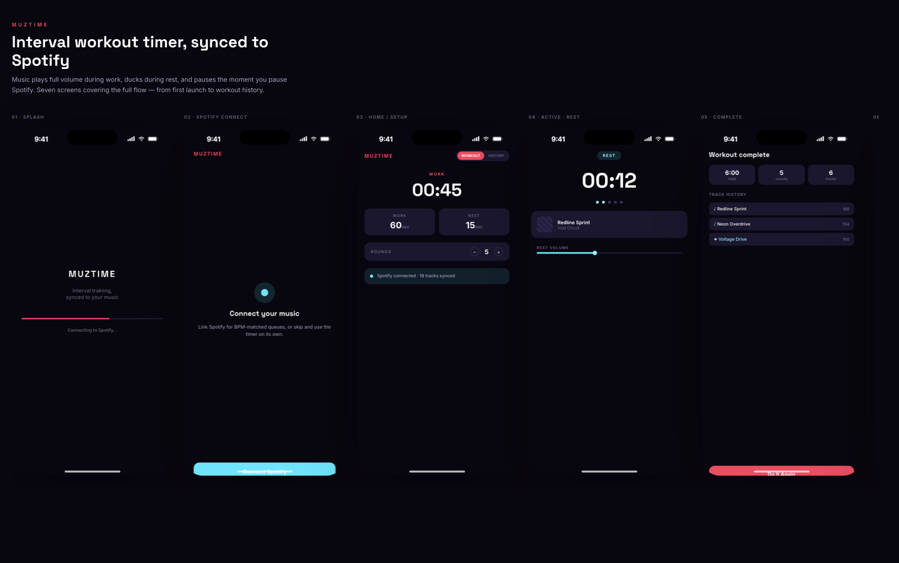
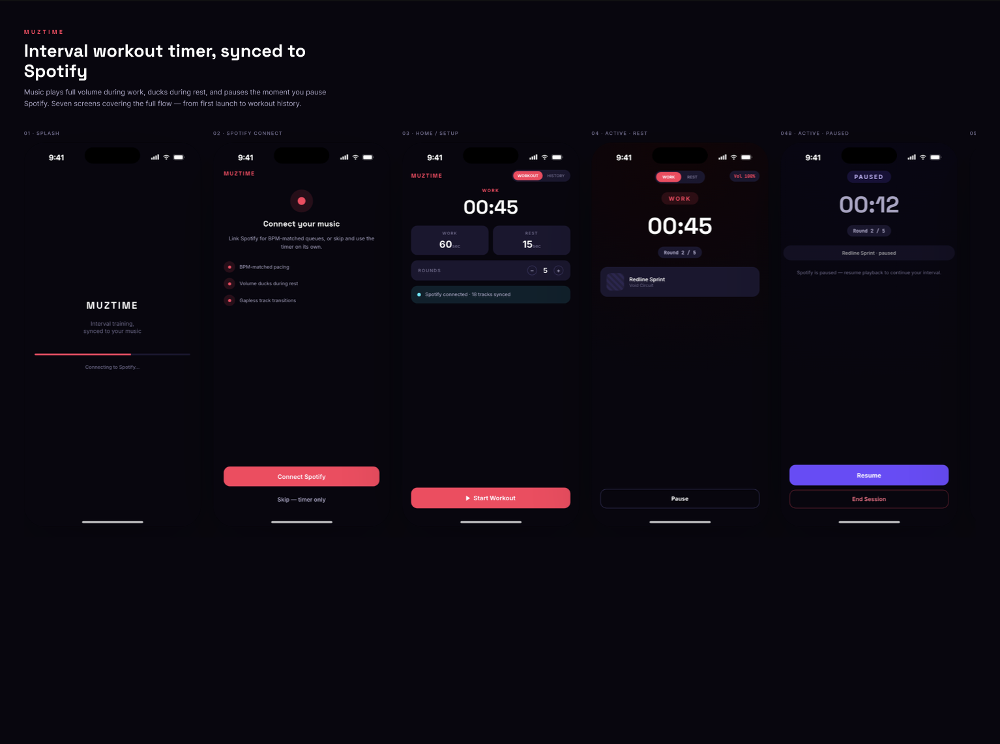
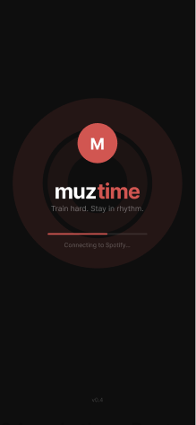
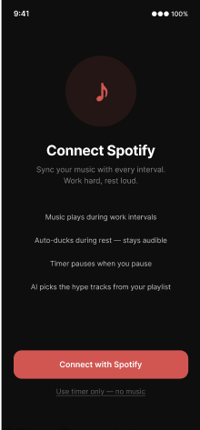
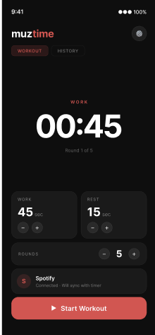
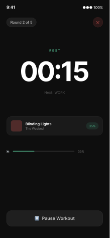
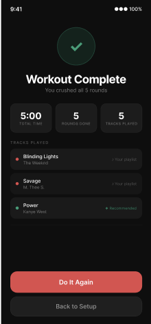
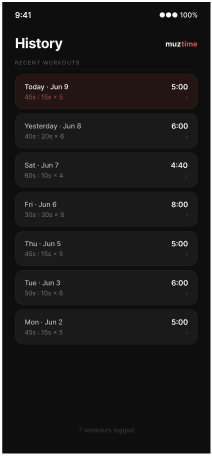
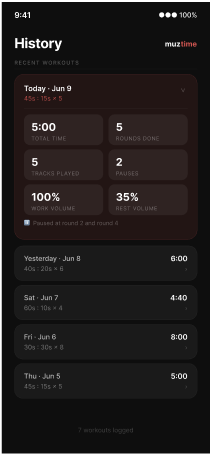

01 — The Problem
Interval timers and music apps are never actually sinked and intervals are hard to track through music.
What Makes MuzTime Unique
One integrated session — the timer and Spotify respond to each other automatically, with just enough manual control (ducking, playlist choice) to feel personal.
02 — Core Mechanics
Three systems keep the timer and the music in lockstep, without asking the user to babysit either one.
Linked Pause
The timer pauses the instant Spotify pauses, in both work and rest intervals — no separate controls mid-set.
Intro Skip
Spotify's Audio Analysis API detects quiet intros and skips them, so every round starts already on the beat.
Queue Management
A AI queue sequences tracks from your own playlist by vibe and energy, with Spotify Recommendations as a labeled fallback.
03 — The Flow, 7 Screens
All of these designs were tried through AI to get a understanding of professional/sporty design style.

Claude Design (AI) — Pass 1
Claude Design (AI) — Pass 2






04 — Locked Decisions
Music on pace - using spotify AI, feed some playlists and ask it to recommend similar songs when the user's playlist end.
Connecting Spotify — The app has its own identity aside from the Spotify green. By spofity API, advertisement will play for free users - will be treated like a music and played throughout the timer.
No-music timer — A muted timer is included.
Distinguishing workout/rest — start/stop with spotify, add docking to music at rest.
Web first — current API access focuses on web only.
05 — Going Forward
Seven screens designed and decided through AI vibe coding. The backend build against the Spotify Web API is in progress — Python, learned largely on this project.